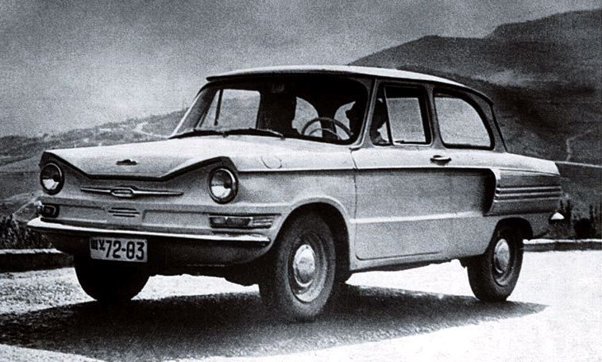
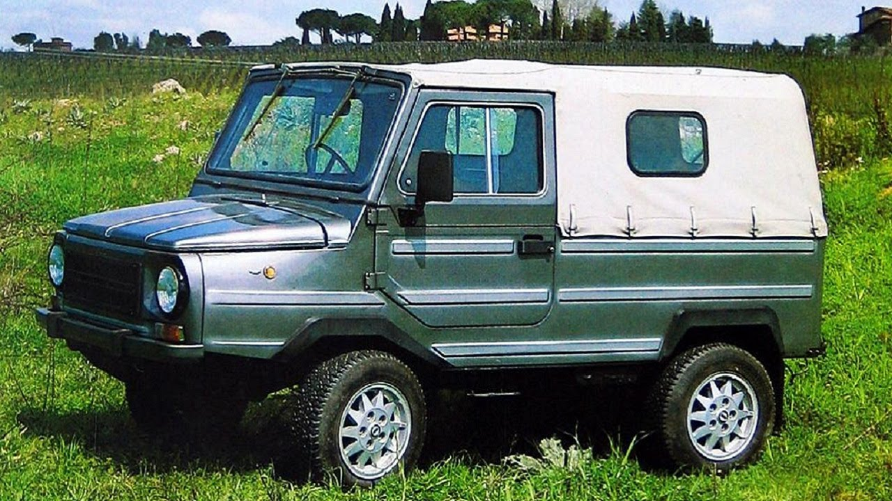
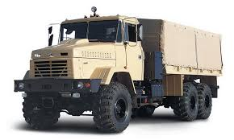
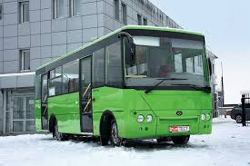

В другій половині 1950-х рр. рівень життя населення СРСР різко зріс: збільшилися доходи, почалося масове будівництво житла, значно розширився асортимент і об'єми випуску товарів народного споживання. Між цим, основним видом індивідуального транспорта в країні залишався двоколісний— особистий автомобіль мали дуже невелике поширення навіть порівняно з Західною Європою, де в той час вже починалося масова автомобілізація. Безпосередня робота по створенню мікроавтомобілів розпочалась в 1955 році[2]. Першими було збудовано на ІМЗ два дослідні автомобілі «Білка»[2].
Fiat 600
Родоначальником майбутніх «Запоріжців» є розробка МЗМА «Москвич-444», проектування якого почалося в 1956 році. До 1959 року зовнішній вигляд машини прийняв знайомі контури, а сам автомобіль почав іменуватися ЗАЗ-965 і в 1960 році був поставлений на конвеєр. Першу партію автомобілів завод зібрав 22 листопада і до кінця року випустив близько півтори тисячі «Запорожців».
Характерними особливостями ЗАЗ-965 були двері на задніх петлях, які відкривалися проти ходу руху автомобіля; розташовані на крилах (на рівні капота) підфарники; а також дворядне розташування вентиляційних отворів на повітрозабірниках. Крім того, на капоті, над номерним знаком, був додатковий прямокутний заґратований отвір для виведення повітря, що охолоджує двигун. На передку машини, на її багажнику, ставилася характерна емблема у вигляді зірки, а нижче неї, на передньому облицюванні, був напис українською мовою «Запорожець».

Транспортер переднього краю «ТПК», цивільне маркування ЛуАЗ-967 — повнопривідний автомобіль-амфібія, особливо малої вантажопідйомності.
Був створений на замовлення ВДВ для евакуації поранених, підвозу боєприпасів і військово-технічного майна, буксирування, а також установки окремих видів озброєння.
Серійно вироблявся з 1975 по 1989 рік на Луцькому автомобільному заводі.
На базі ТПК були створені цивільні автомобілі підвищеної прохідності ЛуАЗ-969, ЛуАЗ-969М, ЛуАЗ-1302 і їх модифікації.
Транспортер, що відрізняється дуже малими габаритами, має водонепроникний корпус, в передній частині якого розташований двигун МеМЗ-967 потужністю 30 к.с. Характерною особливістю автомобіля є відкидна рульова колонка, змонтована, як і сидіння водія, по центру машини. Така конструкція рульової колонки дозволяє водієві при необхідності керувати автомобілем в напівлежачому положенні.
Модифікації
ЛуАЗ-967А - від базової моделі відрізнявся рядом удосконалень і новим двигуном МеМЗ-967А більшої потужності.
ЛуАЗ-967М - удосконалений варіант модифікації ЛуАЗ-967А з тим же двигуном і його модифікаціями, відрізнявся від попередньої моделі електроустаткуванням, уніфікованим з автомобілями УАЗ, гідравлікою, уніфікованою з автомобілями Москвич. Роки випуску: 1975-1988. Після створення виробничого об'єднання «АвтоЗАЗ», до складу якого деякий час входив Луцький автозавод, цивільний варіант випускався також під маркою ЗАЗ-967М.

КрАЗ-219 (англ. KrAZ-219) — вантажний автомобіль підвищеної прохідності з колісною формулою 6x4. Призначений для перевезення вантажів і буксирування причепів масою до 50 тонн.
Автомобіль був створений в 1958 році на Ярославському автомобільному заводі (ЯАЗ), де і виготовлявся з 1958 до 1959 року, під назвою ЯАЗ-219. Потім, виробництво було передано на Кременчуцький автомобільний завод (КрАЗ), де КрАЗ-219 виготовлявся аж до 1963 року, коли його змінив модернізований КрАЗ-219Б, який відрізнявся наявністю бортової мережі на 24 вольта і модернізованою підвіскою. Дана модифікація випускалася до 1965 року. На конвеєрі КрАЗу, її змінив КрАЗ-257Б.
Автомобіль комплектувався рядним двохтактним 6-циліндровим дизельним двигуном ЯАЗ-М206І об'ємом 6,927 л, потужністю 180 к.с. при 2000 об/хв, крутним моментом 705 Нм при 1000 об/хв і 5-ти ступінчастою механічною КПП, в якій пізніше з'явилися синхронізатори на кожну передачу переднього ходу.

В основі ТУР-А049 лежить шасі вантажівки ГАЗ-3302 "ГАЗель". Автобус багато в чому нагадує одну з найпопулярніших вітчизняних моделей БАЗ-2215 "Дельфін", виробництво якої ведеться корпорацією "Еталон" з 2003 року. У подібності цих моделей немає нічого дивного, адже обидві машини проектувалися на ВАТ "Укравтобуспром", фахівці якого також розробили і багато автобуси, що випускаються нині корпораціями "Богдан" та "Еталон".[1] Тур-А049 відрізняється від БАЗ-2215 більш широким кузовом (і, відповідно, проходом між сидіннями в салоні), іншим скліостікленням і пасажирською дверкою салону. Остання може бути ручною (модифікація Тур-А049.12) або автоматичною (модифікація Тур-А049.11), але і в тому і в іншому випадку вона одностулкова (у БАЗ-2215 - двостулкові автоматичні двері). Здавалося б, що ширший кузов повинен забезпечувати і більшу місткість, ніж у БАЗа, але вона однакова для обох машин: 14 місць для сидіння і 4 - для стояння.
Виробництво автобусів Тур-А049 було розпочато в 2006 році. У подальшому вони з'явилися на маршрутах багатьох українських міст.
В 2010 році корпорація "Богдан", викупивши ліцензію на виробництво мікроавтобусів Тур-А049, представила власну модель автобуса малого класу Богдан-А049, яка відрізняється від "Туру" лише вклеєними вікнами. При цьому "Укравтобуспром" не відмовився від випуску моделі А049, більше того, в 2010 році з'явилася його "шкільна" модифікація.
В 2011 році ПАТ «Черкаський автобус» вийшло з корпорації «Богдан».


{kind=link}
{kind=link}
{kind=link}
{kind=link}